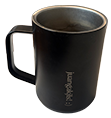

This cup specifically, is an ceramic-based insulated coffee mug that possess extra-ordinary capabilities to retain heat, perfect for storing my drinks during my long work sessions. Given to me by a close friend of mines before moving to the states, this mug has been with me through hell and back. Through the 2 (and almost half) years of my time in RISD, this coffee mug has stored so much energy for my well-being. From my home-brewed coffee up to the emergency ice-cold energy drink, this coffee mug has been the vessel for helping to keep on working through RISD’s workload, even when things may get overly hectic.
I really appreciate on how well-made this coffee mug really is, being crafted with care through it’s easy-to-hold grip, a lid that never shatters even if I constantly drop it, and a siliconed-based bottom to prevent the cup from slipping on my table, this cup truly enhances my quality of life!
Moreover, my friends actually engraved my instagram username tag to this mug, serving as a reminder on how we’re still in constant communication with each other, even if we are on different continents.